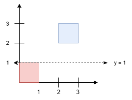
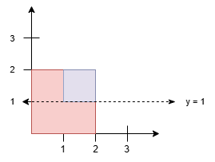

| Category | Difficulty | Likes | Dislikes |
|---|---|---|---|
| Algorithms | Hard | 23 | 6 |
google
You are given a 2D integer array squares. Each squares[i] = [xi, yi, li] represents the coordinates of the bottom-left point and the side length of a square parallel to the x-axis.
Find the minimum y-coordinate value of a horizontal line such that the total area covered by squares above the line equals the total area covered by squares below the line.
Answers within 10-5 of the actual answer will be accepted.
Note: Squares may overlap. Overlapping areas should be counted only once in this version.
Example 1:
Input: squares = [[0,0,1],[2,2,1]]
Output: 1.00000
Explanation:

Any horizontal line between y = 1 and y = 2 results in an equal split, with 1 square unit above and 1 square unit below. The minimum y-value is 1.
Example 2:
Input: squares = [[0,0,2],[1,1,1]]
Output: 1.00000
Explanation:

Since the blue square overlaps with the red square, it will not be counted again. Thus, the line y = 1 splits the squares into two equal parts.
Constraints:
1 <= squares.length <= 5 * 104squares[i] = [xi, yi, li]squares[i].length == 30 <= xi, yi <= 1091 <= li <= 1091015.